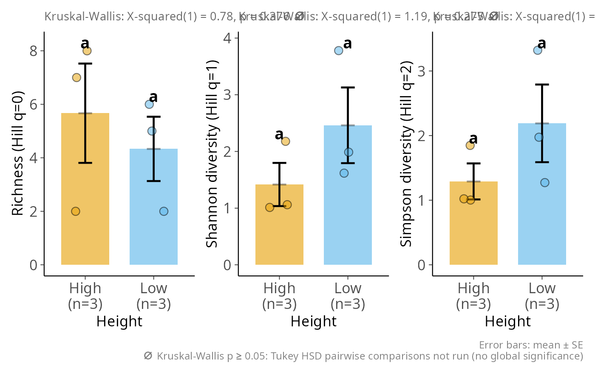
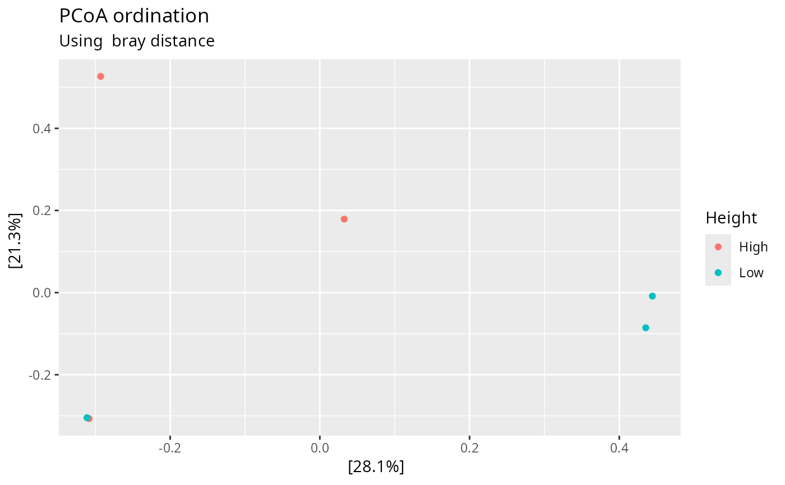

Overview plot of alpha and beta diversity for a phyloseq object
Source:R/plot_overview_pq.R
plot_overview_pq.Rd
Produce, in a single call, the main relevant graphical views of alpha- and
beta-diversity for a phyloseq object as a function of one sample
variable (fact). The set of panels adapts to the type of fact:
Numeric variable — alpha-diversity is shown as a Hill-numbers scatter plot against the variable (via
ggscatt_pq(), one panel per Hill orderq, with the correlation statistics from ggstatsplot); the ordination and UMAP points are colored by a continuous gradient. Venn/UpSet panels are skipped (they require discrete groups).Factor with 2 to
venn_maxlevels — alpha-diversity bar plots with error bars and Tukey letters (viahill_bar_pq()), a Venn diagram of shared taxa (viaggvenn_pq()), an ordination and a UMAP colored by the levels.Factor with more than
venn_maxlevels — same as above but the Venn diagram is replaced by an UpSet plot (viaupset_pq()), which stays legible with many sets.
This is a convenience wrapper meant for quick exploration; for publication
figures, call the dedicated functions (hill_bar_pq(), ggscatt_pq(),
plot_ordination_pq(), ggvenn_pq(), upset_pq(), umap_pq()) directly to
fine-tune each panel.
Usage
plot_overview_pq(
physeq,
fact,
q = c(0, 1, 2),
add_alpha = TRUE,
add_ordination = TRUE,
add_venn = TRUE,
add_umap = TRUE,
venn_max = 4,
ordination_method = "PCoA",
dist_method = "bray",
one_plot = FALSE,
...
)Arguments
- physeq
(required) a
phyloseq-classobject obtained using thephyloseqpackage.- fact
(required) Name of a sample variable present in the
sam_dataslot ofphyseq. Drives every panel. Numeric variables trigger the gradient/scatter behavior; other variables are treated as a factor and must have at least two levels.- q
(vector of integer, default
c(0, 1, 2)) The Hill numbers orders (q = 0 richness, q = 1 Shannon, q = 2 Simpson).- add_alpha
(logical, default TRUE) Add the alpha-diversity panel: a Hill-number bar plot (
hill_bar_pq()) for a factor, or a Hill-number scatter (ggscatt_pq()) for a numeric variable.- add_ordination
(logical, default TRUE) Add the beta-diversity ordination panel.
- add_venn
(logical, default TRUE) Add a Venn (or UpSet) panel of shared taxa across the levels of
fact. Ignored whenfactis numeric.- add_umap
(logical, default TRUE) Add a UMAP panel (via
umap_pq()). This panel can be slow on datasets with many samples. It is skipped (with a message) when the umap package is not installed or when there are 15 samples or fewer (umapdefaults ton_neighbors = 15, which requires more samples than that); set to FALSE to skip it explicitly.- venn_max
(integer, default 4) Maximum number of levels for which a Venn diagram is drawn. Above this threshold an UpSet plot is used instead.
- ordination_method
(character, default
"PCoA") Ordination method passed toplot_ordination_pq()."PCoA"is recommended as it always converges;"NMDS"may fail on small or sparse datasets.- dist_method
(character, default
"bray") Distance method passed toplot_ordination_pq()(and ultimately tovegan::vegdist()).- one_plot
(logical, default FALSE) If TRUE, assemble the panels into a single figure with the patchwork package. If FALSE (default), return a named list (one entry per panel), letting the user arrange them freely. Mirrors the
one_plotargument ofhill_pq().- ...
Additional arguments passed on to
patchwork::wrap_plots()(e.g.ncol,nrow,guides) whenone_plot = TRUE.
Value
If one_plot = FALSE (default), a named list of plot objects (the
alpha entry is itself a multi-panel patchwork figure). If
one_plot = TRUE, a single patchwork object
assembling all panels.
Details
The alpha-diversity panel relies on patchwork (always) and,
for a numeric fact, on ggstatsplot (via ggscatt_pq()). Other
panels may additionally require ggVennDiagram (Venn),
ComplexUpset (UpSet) or umap (UMAP) depending on the options
used.
Examples
# \donttest{
if (requireNamespace("patchwork", quietly = TRUE)) {
# Balanced 6-sample subset spanning two Height levels (fast example).
# UMAP and Venn are disabled here (too few samples / extra dependency).
sn <- sample_names(data_fungi_mini)
hi <- sn[which(data_fungi_mini@sam_data$Height == "High")[1:3]]
lo <- sn[which(data_fungi_mini@sam_data$Height == "Low")[1:3]]
ps <- prune_samples(c(hi, lo), data_fungi_mini)
ps <- clean_pq(ps)
plot_overview_pq(ps, fact = "Height", add_venn = FALSE, add_umap = FALSE)
}
#> Cleaning suppress 31 taxa and 0 samples.
#> Joining with `by = join_by(Sample)`
#> Taxa are now in columns.
#> $alpha

#>
#> $ordination

#>
# }
if (FALSE) { # \dontrun{
# Full overview with all panels (factor with 2 levels -> Venn).
plot_overview_pq(data_fungi_mini, fact = "Height", one_plot = TRUE)
# Numeric variable -> Hill scatter (ggscatt_pq) + gradient-colored
# ordination/UMAP, Venn/UpSet automatically skipped.
plot_overview_pq(data_fungi_mini, fact = "Time", add_umap = FALSE)
} # }